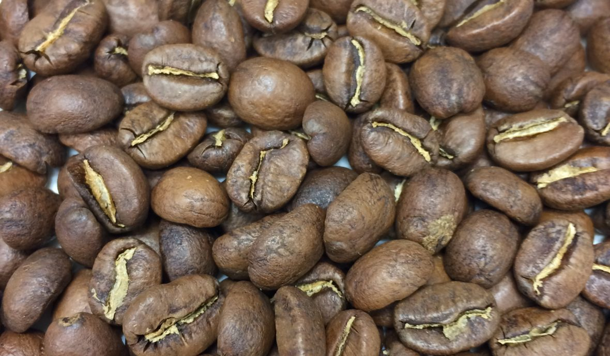

Untuk mereka yang menyukai kopi dengan tekstur mirip seperti teh dan karakteristik lembut, light roast adalah tingkat sangrai yang cocok. Kamu bisa memeriksa biji kopi yang dibeli untuk mengetahui tingkatannya. Biji kopi yang disangrai secara light umumnya bukan hanya akan terlihat seperti “versi paling muda” dari warna coklat kopi, tapi juga tidak ada kilau minyak yang terlalu kelihatan di permukaan biji kopi.
Semakin lama biji kopi disangrai, maka akan semakin banyak juga minyak yang akan muncul di permukaan biji kopi. Karena biji kopi ‘light roasted’ cenderung disangrai dalam waktu yang tidak lama –dan kadang dalam temperatur rendah, minyak kopi pun belum sempat muncul ke permukaan biji kopinya.